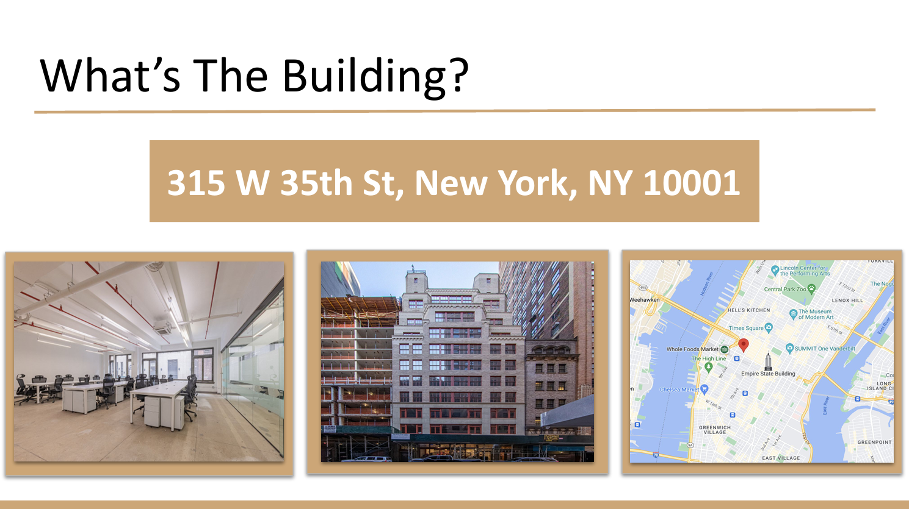
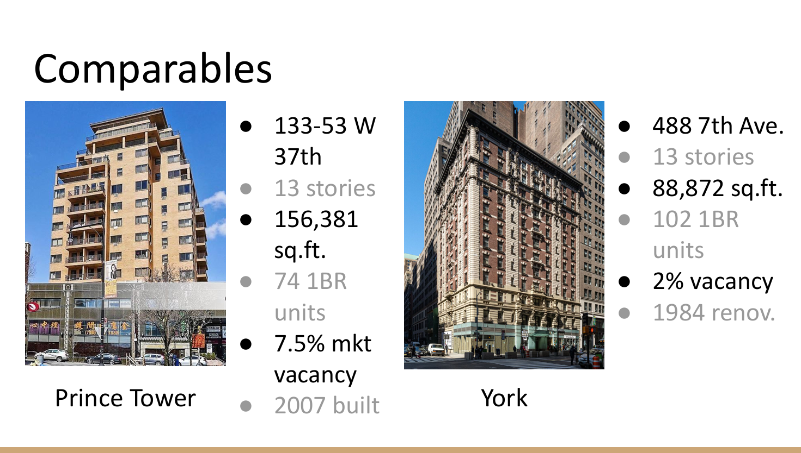
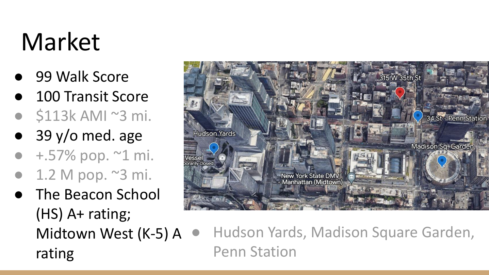

Course Project — URP 390
Market Research

Subject property — 315 W 35th St, New York, NY

Comparables — Prince Tower and York

Market conditions and surrounding demand drivers
Project for University of Michigan Class, URP 390 — Real Estate Design and Development Fundamentals. My role was market comparables and market research. I understand the market conditions and location are important when making assumptions about the performance of a development or investment. I am interested in learning about and using new tools for market research.